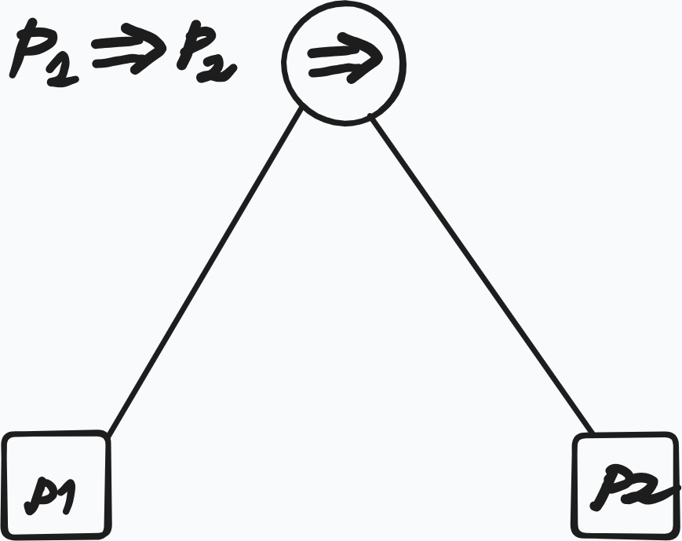
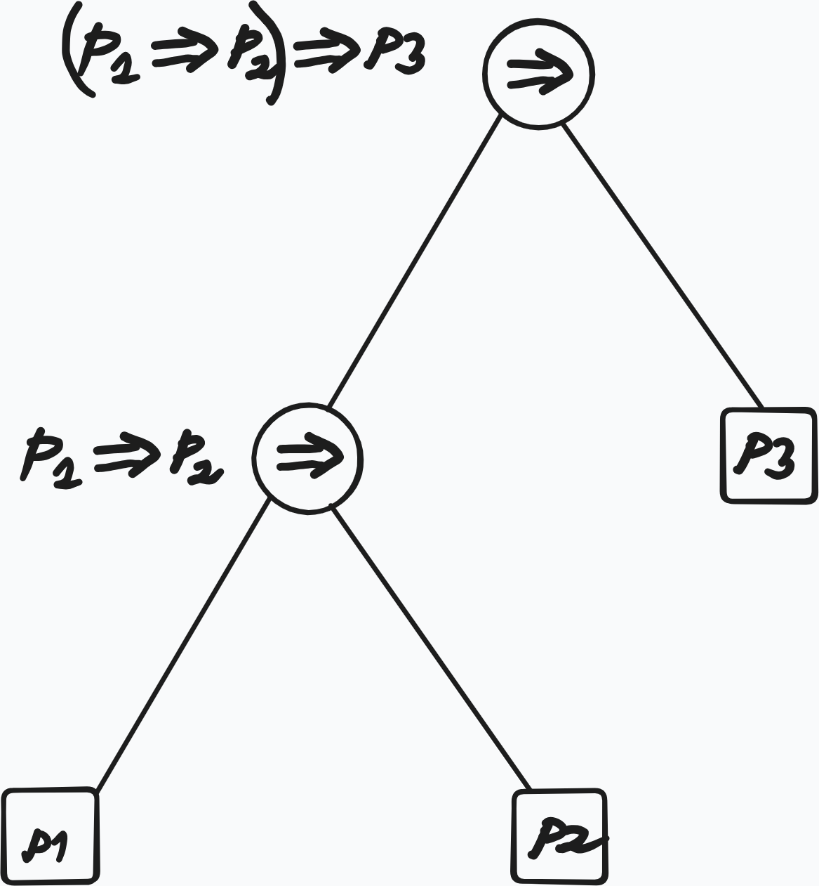
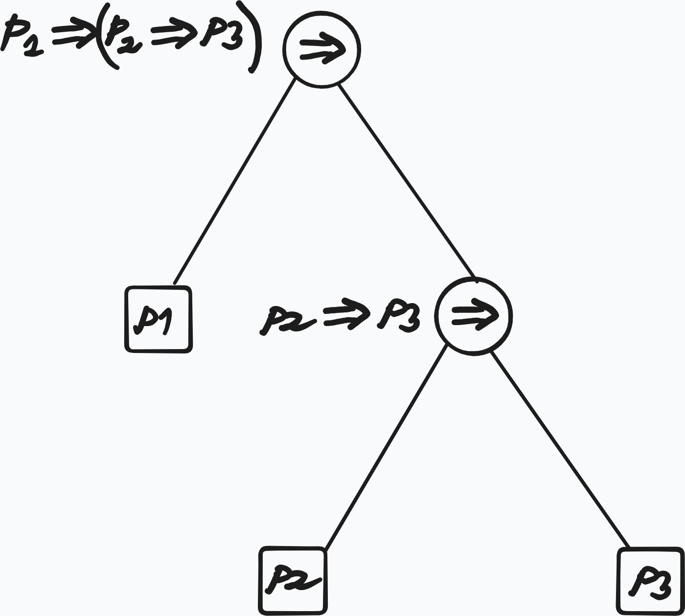

1 Lecture 1 - Propositional Logic: Syntax
Overview
Brief summary of what this lecture does (2–4 lines).
Goal: Define the expression we can write, these are called well-formed-formulas, or wffs.
There are various ways of defining what counts as a wff. One of them is the inductive approach.
Inductive Approach
First we start with atomic formulas:
\[ \begin{aligned} &P_0, P_1, P_2, \dots \\ &(P_i)_{i \in \mathbb{N}} \end{aligned} \]
are atomic propositions.
We give some rules to inductively define new formulas from old ones.
- if \(\varphi\), \(\psi\) are wff then \(\varphi \Rightarrow \psi\) is a wff
- if \(\varphi\), \(\psi\) are wff then \(\varphi \wedge \psi\) is a wff
- if \(\varphi\), \(\psi\) are wff then \(\varphi \vee \psi\) is a wff
- if \(\varphi\) is a wff then \(\neg \varphi\) is a wff
Constructor Approach
It is useful to express these rules with constructors, which define wffs as values of some functions (with codomain \(\mathrm{WFF}\))
In this approach atomic formulas are values of functions:
Definition 1.1 (Atomic formulas) Atomic formulas are values of functions like:
\[ P:\mathbb{N} \to \mathrm{WFF}, \quad :i \mapsto P_i \]
or
\[ ''\cdot'': \mathrm{String} \to \mathrm{WFF}, \quad :x \mapsto "x" \]
Example 1.1 (String Constructor) with the latter we can construct arbitrary propositions like:
“today\(\sqcup\)is\(\sqcup\)sunny”
We also have constructors for the logical connectives:
Definition 1.2 (Constructors for Logical Connectives) \[ \begin{aligned} &(\neg):\mathrm{WFF} \to \mathrm{WFF}, \quad :\varphi \mapsto \neg\varphi \\ &(\land) : \mathrm{WFF} \times \mathrm{WFF} \to \mathrm{WFF}, \quad :(\varphi, \psi) \mapsto \varphi \land \psi \\ &(\lor) : \mathrm{WFF} \times \mathrm{WFF} \to \mathrm{WFF}, \quad :(\varphi, \psi) \mapsto \varphi \lor \psi \\ &(\Rightarrow) : \mathrm{WFF} \times \mathrm{WFF} \to \mathrm{WFF}, \quad :(\varphi, \psi) \mapsto \varphi \Rightarrow \psi \\ \end{aligned} \]
Remark 1.1 (Constructor vs Symbol View of Logical Connectives). Earlier we wrote \(\varphi \Rightarrow \psi\) and then we denoted \(\Rightarrow\) symbol as a function of type \(\mathrm{WFF} \times \mathrm{WFF} \to \mathrm{WFF}\) , we use \((\Rightarrow)\) to distinguish between the two concepts.
A different but related question that arises si the ambiguity of \(P_1 \Rightarrow P_2 \Rightarrow P_3\). According to the inductive definition there are two ways this formula could have been constructed which corresponds to the different formulas:
- \((P_1 \Rightarrow P_2) \Rightarrow P_3\)
- \(P_1 \Rightarrow (P_2 \Rightarrow P_3)\)
To resolve this ambiguity we define the associativity rule:
Definition 1.6 (Associativity Rule for \(\Rightarrow\)) \[ P_1 \Rightarrow P_2 \Rightarrow P_3 := (P_1 \Rightarrow P_2) \Rightarrow P_3 \]
Remark 1.2 (Wffs as Trees). Wffs can be viewed as trees. Trees encode the derivation structure and resolve the ambiguity



our collection of wffs can be further enriched with another binary constructor:
\[ \begin{aligned} (\Leftrightarrow)&:\mathrm{WFF} \times \mathrm{WFF} \to \mathrm{{WFF}} \\ &: (\varphi, \psi) \mapsto \varphi \Leftrightarrow \psi \end{aligned} \]
Remark 1.3 (Meaning of \(\Leftrightarrow\)). At this stage there is no relation between
\[ \varphi \Leftrightarrow \psi \quad \text{and} \quad (\varphi \Rightarrow \psi) \land (\psi \Rightarrow \varphi) \]
Let is give another ‘set-theoretic’ approach
Set Theoretic Approach
First we define the alphabets:
Definition 1.3 (Set Theoeretic Approach to Defining Wffs) We start with the alphabets:
\[ \begin{aligned} \mathcal{A} &:= \{P_i\}_{i \in \mathbb{N}} && \text{(sub-alphabet of atomic formulas)} \\ \mathcal{C} &:= \{\Rightarrow, \land, \lor, \neg, \Leftrightarrow\} && \text{(sub-alphabet of logical connectives)} \\ \mathcal{V} &:= \mathcal{A} \cup \mathcal{C} \cup \{(, )\} && \text{(alphabet of propositional logic, including punctuation marks)} \end{aligned} \]
Then we define the so-called Kleene Closure of \(\mathcal{V}\):
Definition 1.4 (Kleene Closure of \(\mathcal{V}\)) \[ \mathcal{V}^* := \bigcup_{i = 0}^\infty \mathcal{V}_{i} \]
\(\mathcal{V}^*\) is the language containing all sorts of strings that can be constructed from the alphabet \(\mathcal{V}\), also senseless ones.
To define the language propositional logic that contains only the formulas that we want and nothing else, we take the usual set-theoretic approach of taking the infinite union of all sets \(\mathcal{W} \subseteq \mathcal{V}\) that satisfy the following properties:
- \(\mathcal{A} \subseteq \mathcal{W}\)
- if \(\varphi, \psi \in \mathcal{W}\) then \(\varphi \diamond \psi \in \mathcal{W}\), where \(\diamond \in \{\Rightarrow, \land, \lor, \Leftrightarrow\}\)
- if \(\varphi \in \mathcal{W}\) then \(\neg\varphi\in\mathcal{W}\)
Then the language of propositinal logic is defined as:
Definition 1.5 (Language Propositional Logic as Infinite Intersection) \[ \mathcal{F}(\mathcal{A}) := \bigcap\{\mathcal{W} \subseteq \mathcal{V}^* | \mathcal{W} \text{ satisfies (1), (2), and (3)}\} \]
Theorem 1.1
With this construction \(\mathcal{F}(\mathcal{A})\) is the smallest set that satisfies the properties (1), (2) and (3), i.e.
- \(\mathcal{F}(\mathcal{A})\) satisfies the properties (1), (2) and (3)
- For any set \(\mathcal{W}\) that satisfies the properties (1), (2) and (3) we have \(\mathcal{W} \subseteq \mathcal{F}(\mathcal{A})\)
Summary
- WFF is defined inductively
- Constructors that generate WFFs
- Set theoretic construction of WFFs